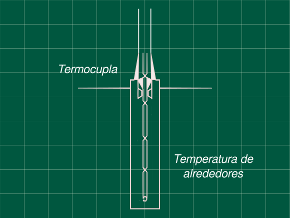
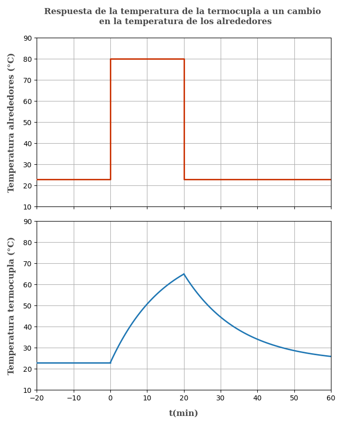

Problema 5.5 (Process Dynamics and Control - Seborg, Edgar, M, D)

Una termocupla tiene las siguientes características cuando es sumergido en un tanque agitado:
Masa termocupla Capacidad calorıˊfica Coeficiente de transferencia de calor Aˊrea de superficie de la termocupla = 1 g= 0.25 cal/(cm2 °C)= 20 cal/(cm2 h °C)= 3 cm2
Halle la función transferencia de la termocupla que relaciona la temperatura de la termocupla T y la de la de los alrededores TA.
Si la termocupla esta inicialmente fuera tanque, con una temperatura ambiente de 23 °C. ¿Cuál será la máxima temperatura alcanzada si es puesta en el tanque a temperatura de 80 °C, y se la saca después de 20s?
Grafique las la variación de temperatura de la termocupla.
Hallando la función transferencia
Escribiendo el balance de energía en estado transitorio y en estado estacionario.
mCpdtdT=UA(TA−T)
0=UA(TAs−Ts)
Restando ambas ecuaciones y pasando a variables desviación
mCpdtd(T−Ts)=UA[(TA−TAs)−(T−Ts)]
mCpdtdT′=UA(TA′−T′)
Aplicando la transformada de Laplace, sabiendo que para el estado estacionario T’(t=0)=0
mCps T(s)=UA(TA′(s)−T′(s))
Despejando la función tranferencia y haciendo τ=(mCp)/(UA) en segundos
TA′(s)T′(s)=τs+11
τ=20cm2 h °Ccal×360 s1 h3 cm21 g ×0.25 g °Ccal
τ=15
TA′(s)T′(s)=15s+11 ... (1)
Describiendo la perturbación
TA′(t)=TA(t)−TAs⎩⎪⎪⎨⎪⎪⎧080−23 °C0si t<0si 0<t<20si t>20
TA′(t)=57u(t)−57u(t−20)
Aplicando la antitransformada
TA′(s)=s57−57se−20s
Reemplanzando en la ecuación (1)
T′(s)=s(15s+1)57−s(15s+1)57e−20s
Realizando la antitransformada (de tablas). Recuerde que e−as crea un desfase en la antitransformada igual a t=t−a
T´(t)=57(1−e−t/15)u(t)−57(1−e−t/15)u(t)∣t=t−20
T´(t)=57(1−e−t/15)u(t)−57(1−e−(t−20)/15)u(t−20)
T(t)=T′(t)+Ts
T(t)=57(1−e−t/15)u(t)−57(1−e−(t−20)/15)u(t−20)+23
Expresando esta función de manera más entendible
T(t)={57(1−e−t/15)+2357(−e−t/15+e−(t−20)/15)+23si 0<t<20si t>20
Las funciones son monotonicas en ambos rangos, por lo que para el máximo bastará con analizar el punto anguloso, la temperatura máxima se da un instante antes de sacar la termocupla del tanque a 80 °C, es decir a los 20 s.
T(t=20)=57(1−e−20/15)+23
Tmax=64.974 °C
Gráfica de la función

Referencias
- Seborg, D. E.; Edgar, T. F.; Mellichamp, D. A.; Doyle, F. J. (2016). Process Dynamics and Control (4th edition). John Wiley & Sons, Inc. ISBN 978-1-119-28591-5.